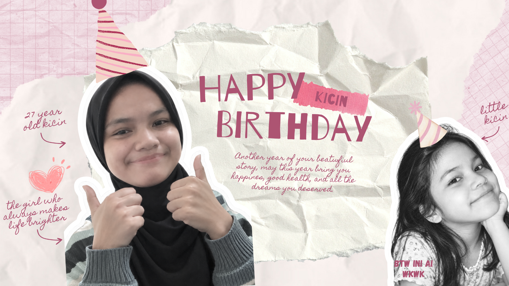
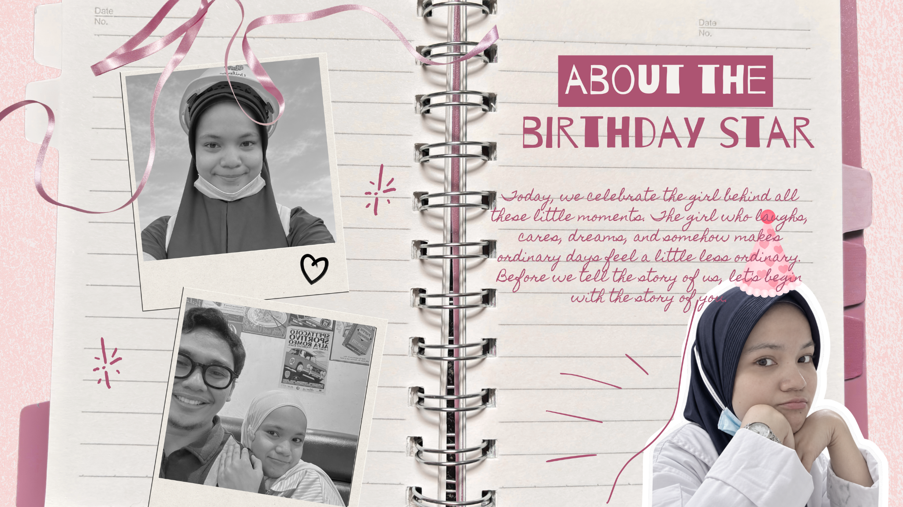
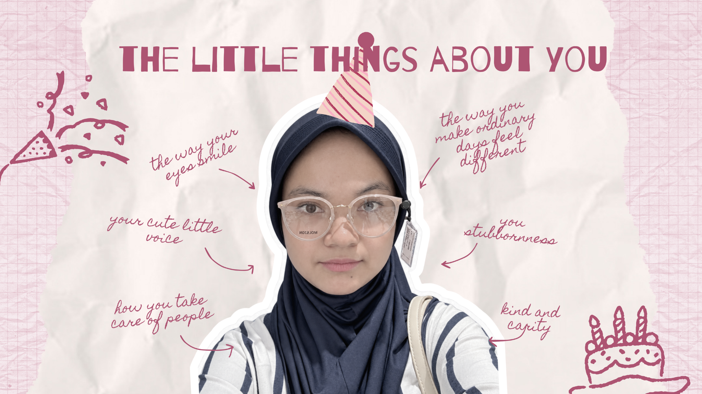
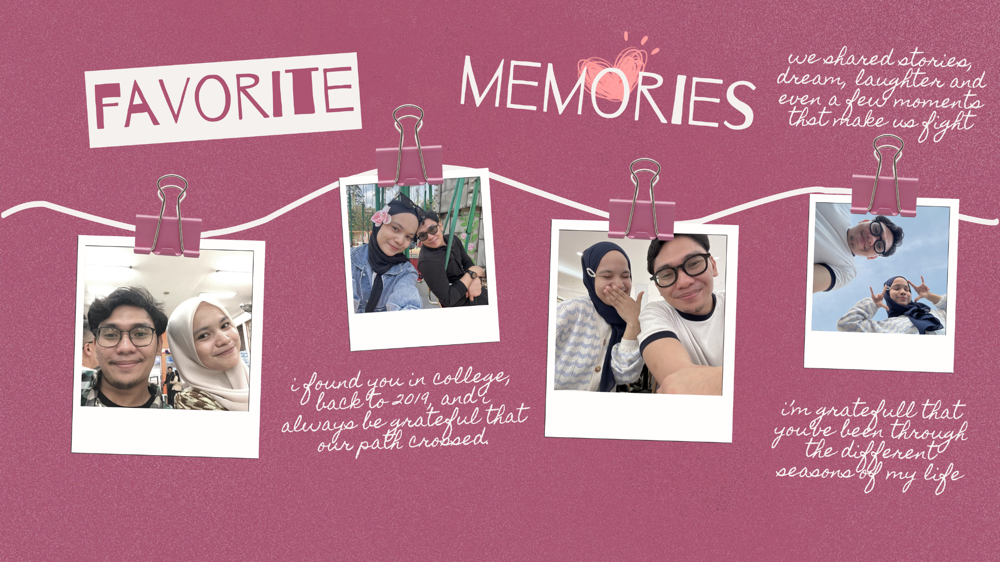
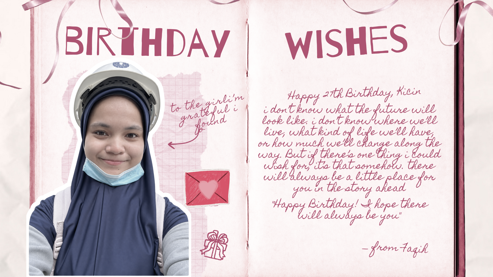

one more thing
And here's
something for you.
Everything you've just seen is only a small part of the story.
Now, press play.

01 / 05
02 / 05
03 / 05
04 / 05
05 / 05Everything you've just seen is only a small part of the story.
Now, press play.
Aku tidak tahu hidup akan membawaku ke mana suatu saat nanti.
Mungkin akan ada banyak hal yang berubah. Tempat yang kutinggali, orang-orang yang datang dan pergi, pekerjaan yang ku punya, atau versi diriku sendiri yang sekarang akan berubah perlahan menjadi seseorang yang berbeda.
Tapi di antara banyaknya perubahan yang tidak bisa ku pastikan, ada satu hal yang selalu kuharapkan, semoga tetap ada kamu di dalamnya.
Semoga suatu saat nanti, ketika aku sudah sampai pada banyak hal yang saat ini masih ku usahakan, ada kamu yang ikut melihatnya. Ada kamu yang akan mendengar banyaknya ceritaku tentang hari-hari yang berat, tentang hal-hal kecil yang berhasil kulalui, dan tentang mimpi-mimpi yang dulunya hanya berani kusimpan sendiri.
Semoga ada kamu, di suatu hari ketika aku akhirnya punya rumah yang ingin kutinggali lama. Ada kamu di meja makan, yang siap mendengarkan cerita-ceritaku. Ada kamu di ruang tengah, mengeluh karena aku kembali menaruh barang sembarangan. Ada kamu yang mungkin sudah hafal dengan kebiasaanku, Bahkan sebelum aku menyadarinya.
Semoga selalu ada kamu di hari-hari biasa. Tidak hanya di hari ketika semuanya berjalan dengan sesuai keinginan. Tidak hanya ketika aku sedang baik, sedang bahagia, atau sedang berada dalam versi terbaik diriku. Tapi juga di hari ketika aku bangun dengan perasaan buruk, ketika aku sedang banyak mengeluh, ketika aku terlalu lelah untuk menjadi menyenangkan, dan ketika aku tidak tahu harus bercerita tentang apa, tetapi aku ingin duduk di dekat seseorang.
Semoga ada kamu di sana.
Aku selalu hidup dengan penuh ketakutan. Takut menjadi sesuatu yang mengecewakan, takut menjadi beban seseorang, takut disayangi. Semua ketakutan itu membuatku sulit membayangkan bahwa suatu hari nanti aku bisa memiliki kehidupan yang terasa manis. Rasanya terlalu jauh dari kenyataan. Tapi kamu, menjadi salah satu jawaban atas doa-doaku yang selalu memohon kepada tuhan untuk meyakinkanku bahwa hidup akan selalu baik-baik saja.
Mungkin akan ada hari ketika kita salah paham, ketika kamu muak dengan segala isi pikiranku yang berantakan, ketika kamu memilih diam. Tapi semoga, setelah itu semua, masih ada kamu.
Masih ada ketika aku mencapai semua yang kuinginkan. Orang pertama yang kucari setelahnya. Orang yang mungkin tidak mengerti semua proses yang kujalani, tetapi tetap tahu betapa sulitnya aku sampai di sana. Orang yang ikut senang meskipun pencapaian itu sebenarnya kecil.
Dan semoga ada kamu juga ketika aku gagal.
Ketika sesuatu tidak berjalan sesuai rencana dan aku mulai meragukan diriku sendiri. Semoga bukan nasihat panjang yang kuterima, melainkan pelukan menenangkan serta berkata “coba lagi nanti, sekarang kamu istirahat dulu”
Aku tidak tahu seperti apa bentuk masa depan.
Aku tidak tahu di kota mana kita akan tinggal, rumah seperti apa yang akan kita huni, atau kehidupan seperti apa yang akan kita jalani.
Tapi di antara banyaknya kemungkinan yang tidak aku ketahui di masa depan, aku selalu berharap, semoga ada kamu di dalamnya.
Semoga ada kamu di ulang tahun yang akan datang. Di perjalanan yang belum kita rencanakan. Di foto-foto yang belum pernah kita ambil. Di obrolan tengah malam yang belum terjadi. Di keputusan-keputusan besar yang suatu hari harus kita buat bersama. Semoga ada kamu ketika rambutku mulai berubah, ketika wajahku tidak lagi sama seperti sekarang, ketika kita sudah selalu bersama sampai hal-hal kecil tentang satu sama lain terasa biasa saja.
Karena di antara banyaknya harapanku tentang kehidupan di masa depan, aku hanya ingin kehidupan yang sederhana, dan ada kamu di dalamnya.
Dan suatu saat ketika aku telah tiba di titik itu, aku menoleh ke belakang, melihat semua hal yang sudah kulalui, semoga aku bisa tersenyum dan berkata.
“untung saja, di semua cerita itu, ada kamu di dalamnya”
Happy 27th Birthday, Kicin. ♡